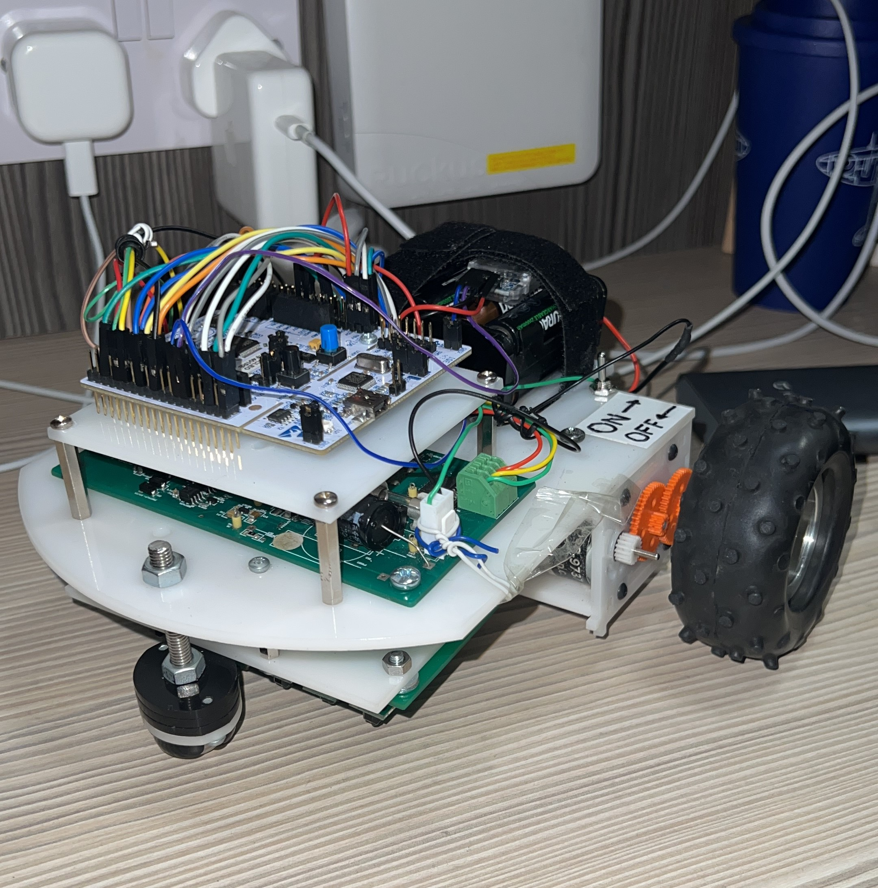

Autonomous White-line Following Buggy
C++ STM32 Mbed Project Management BLE Low-energy Control: PID
Status: Completed
Sep 2021 - May 2022
Project Details 
A modified bang-bang control algorithm was used with fairly precise due to the amount of available sensors and by tuning speed via proportional control algorithm.
The bang-bang control algorithm with maximum sampling time as well as the 6 sensors provides enough resolution to perform well. We have the added advantage of choosing the right gearbox selection that provides enough torque to go over the slope whilst outputting the best speed.
Challenges faced in this project: To decide which control algorithm to proceed as well as coding it into the STM32. A lot of time was spent on debugging the parts of the system. There would also be hardware issues like the STM32 pins not outputting voltage high which was discovered later and mitigated with ‘debugging pins’ code which sets all pins to high, and the user should test using a multimeter voltage test for 5V.
REFLECTIONS
- Could have improved coding collaboration efforts by using version control software like GitHub.
- Teamwork can be improved by the Agile/kanban board instead of checking progress during regular meetings.
- More software distribution would be better, allowing teammates to tune for kp, ki, or kd while the programmer resolves bugs.
- Online resources that could estimate kp, ki, and kd would be ideal continuously tuning it on a single buggy is restricting, as multiple people need access to the physical system to do it.
- Which led me to appreciate the motor control work I have worked on at Intel.
- During one of the technical demonstrations, sometimes the Bluetooth control algorithm doesn’t react to the command instantaneously, thus having some delay.
- To reduce the chances of hitting the wall before it turns, an ultrasonic sensor could be used to detect obstacles and stops. this guarantees no mistakes even if there is a delayed response from the Bluetooth inference. I have implemented obstacle avoidance functionality around the same time frame. View the project here.
- Another solution is that the sampling time of the sensors and Bluetooth should be separated to ensure no collision - suspected reason